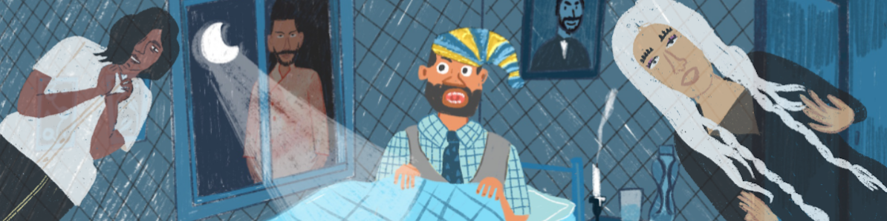

# The Math of Voting
### How we can elect leaders that better represent our interests

## Chapter 4: A Perfect Voting System?
I've been thinking about what the ghosts said...
I thought I was on to something big! But then...
Exercise 2
Check all preferences that are true collectively:
Iswar > Nina
Nina > Sylas
Sylas > Iswar
Correct! But that means Iswar > Sylas *and* Sylas > Iswar. Which makes no sense!!!
Not all collective preferences have been checked. Keep working.
Uh oh! This is not good!
I can't seem to escape these paradoxes! And they're only the beginning!
There may not be a perfect voting system, but that just means we can keep improving the system we have!
I suppose I can finally let go of being mayor! Maybe I'll take an early retirement. Or, maybe I can finally write my great detective novel? Anyway, right now I need to catch up on sleep. Goodnight, till we meet again!